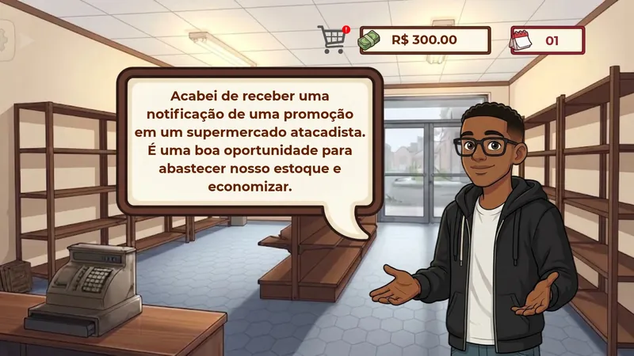
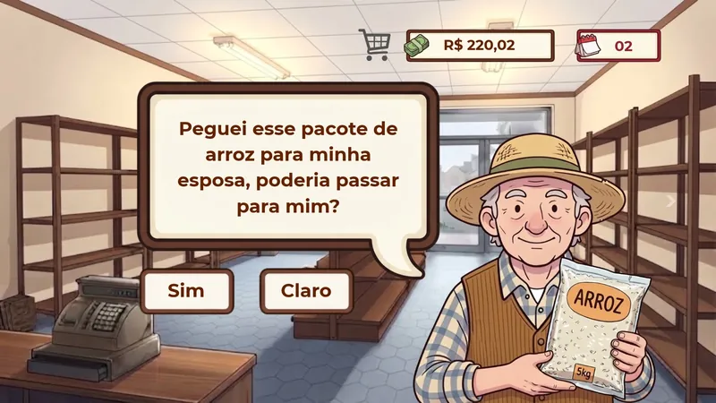

A matemática do balcão
Cada dia do jogo tem um minigame, e cada minigame é uma conta que alguém faz num mercado de verdade. Depois que você resolve, o Korno's mostra como o computador resolveria o mesmo problema. Essa é a parte de matemática computacional.
Compra no atacadista
- Situação
- Mercado limpo, prateleira vazia. O Luís acha uma promoção no atacadista e o Belo tem que montar o carrinho sem passar do dinheiro em caixa.
- Conteúdo
- Operações com números decimais; porcentagem de desconto.
- Série
- 6º ano do Ensino Fundamental (BNCC EF06MA11) e revisão no 7º ano (EF07MA02, porcentagem).
Exemplo resolvido
No protótipo, o Belo começa o Dia 1 com R$ 300,00 e chega ao Dia 2 com R$ 220,02. Um carrinho que fecha exatamente essa conta:
- Some cada linha do carrinho (quantidade × preço).4 salgadinhos × R$ 6,49 = R$ 25,96 4 biscoitos × R$ 8,75 = R$ 35,00 2 macarrões × R$ 4,51 = R$ 9,02 2 refris × R$ 5,00 = R$ 10,00
- Some as linhas, alinhando a vírgula.25,96 + 35,00 + 9,02 + 10,00 = R$ 79,98
- Confira se cabe no orçamento e veja o que sobra.300,00 − 79,98 = R$ 220,02 ✓ cabe
- Desafio extra dos slides: o achocolatado de R$ 80,00 está com 15% de desconto.15% de 80 = 0,15 × 80 = R$ 12,00 80,00 − 12,00 = R$ 68,00
Os preços do carrinho são um exemplo montado para bater com o dinheiro que aparece no protótipo. [PREENCHER: preços reais dos produtos no jogo]
Como o computador resolve
Conferir se o carrinho cabe é só uma soma. O problema fica interessante quando a pergunta vira: qual é o melhor carrinho possível com R$ 300? Esse é o problema da mochila, um clássico da computação. Testar todas as combinações explode rápido (com 30 produtos, são mais de um bilhão), então o computador usa programação dinâmica: resolve o problema para orçamentos menores e reaproveita as respostas.
Ele também trabalha em centavos inteiros, porque no computador 0,1 + 0,2 não dá exatamente 0,3.
// melhor carrinho sem passar do orçamento (valores em centavos)
function melhorCarrinho(itens, orcamento) {
// melhor[v] = maior "utilidade" gastando no máximo v centavos
const melhor = new Array(orcamento + 1).fill(0);
for (const item of itens)
for (let v = orcamento; v >= item.preco; v--)
melhor[v] = Math.max(melhor[v], melhor[v - item.preco] + item.utilidade);
return melhor[orcamento];
}

O caixa e o troco

Pago com uma de cinquenta, pode ser? Só não me vá devolver um saco de moedas.
- Situação
- O primeiro cliente chega ao caixa. O Belo precisa cobrar o preço certo e devolver o troco com notas e moedas.
- Conteúdo
- Porcentagem, acréscimo e desconto; margem de lucro; troco com o sistema monetário brasileiro.
- Série
- 7º ano do Ensino Fundamental (BNCC EF07MA02).
Exemplo resolvido
- O Belo pagou R$ 20,00 no pacote de arroz e quer 30% de margem.30% de 20,00 = 0,30 × 20,00 = R$ 6,00 preço de venda = 20,00 + 6,00 = R$ 26,00
- O cliente paga com uma nota de R$ 50,00.troco = 50,00 − 26,00 = R$ 24,00
- Monte o troco com o menor número de peças: sempre a maior nota que ainda cabe.24,00 → nota de 20 (resta 4,00) 4,00 → nota de 2 (resta 2,00) 2,00 → nota de 2 (resta 0,00) total: 3 peças
- Desafio dos slides: a caixa de óleo de R$ 45,00 vai subir 20%.20% de 45 = 9 → 45 + 9 = R$ 54,00
Preço de custo e margem do arroz são exemplo. [PREENCHER: valores usados no minigame do caixa]
Como o computador resolve
O jeito de pegar sempre a maior nota que cabe tem nome: algoritmo guloso. Ele decide olhando só o passo atual, sem voltar atrás. Com as notas e moedas do real, o guloso sempre acerta o menor número de peças. Mas isso não vale para qualquer sistema: se só existissem moedas de 1, 3 e 4, o troco de 6 sairia 4 + 1 + 1 (três moedas), quando 3 + 3 resolve com duas.
// notas e moedas do real, em centavos, da maior para a menor
const dinheiro = [20000, 10000, 5000, 2000, 1000, 500, 200, 100, 50, 25, 10, 5, 1];
function troco(valor) {
const pecas = [];
for (const d of dinheiro)
while (valor >= d) { valor -= d; pecas.push(d); }
return pecas;
}
troco(2400); // → [2000, 200, 200] (R$ 20 + R$ 2 + R$ 2)Moto Entrega
- Situação
- O faturamento cresceu e o Luís apresenta o app Moto Entrega. Chega o Pedido #001: Bairro Jardim, a 18 km, com prazo de 30 minutos. O jogador escolhe a rota no mapa do bairro e precisa chegar a tempo.
- Conteúdo
- Velocidade média (v = d / t), conversão de unidades, consumo de combustível em km/L.
- Série
- 9º ano do Ensino Fundamental (BNCC EF09MA07, razão entre grandezas) e 1ª série do Ensino Médio em Física (movimento uniforme).
Exemplo resolvido
- Passe o tempo para horas, porque a velocidade vai sair em km/h.30 min = 30 ÷ 60 = 0,5 h
- Aplique a velocidade média.v = d ÷ t = 18 km ÷ 0,5 h = 36 km/h
- Abaixo de 36 km/h, a entrega atrasa. Agora o combustível: a moto faz 40 km/L e vai e volta.distância total = 18 + 18 = 36 km litros = 36 ÷ 40 = 0,9 L
Pedido, distância e prazo vêm do roteiro. O consumo de 40 km/L e o mapa ao lado são exemplo. [PREENCHER: mapa e números do minigame]
Como o computador resolve
Para o computador, o bairro é um grafo: os lugares são vértices e as ruas são arestas com a distância em km. Achar o caminho mais curto é trabalho do algoritmo de Dijkstra: ele sempre visita o lugar ainda não visitado mais perto do mercado e atualiza a distância dos vizinhos. É o mesmo princípio dos apps de mapa.
function dijkstra(grafo, origem) {
const dist = {}, veioDe = {}, visitados = new Set();
for (const lugar in grafo) dist[lugar] = Infinity;
dist[origem] = 0;
while (visitados.size < Object.keys(grafo).length) {
// o lugar não visitado mais perto
let atual = null;
for (const l in dist)
if (!visitados.has(l) && (atual === null || dist[l] < dist[atual])) atual = l;
visitados.add(atual);
for (const [vizinho, km] of Object.entries(grafo[atual]))
if (dist[atual] + km < dist[vizinho]) {
dist[vizinho] = dist[atual] + km;
veioDe[vizinho] = atual;
}
}
return { dist, veioDe };
}| Visita | O que muda |
|---|---|
| Korno's (0) | Praça = 4, Posto = 7 |
| Praça (4) | Escola = 9, Ponte = 13 |
| Posto (7) | Ponte por ali daria 13: empata, fica como está |
| Escola (9) | Jardim = 18 |
| Ponte (13) | Jardim por ali daria 19: perde |
| Jardim (18) | Fim. Caminho: Korno's → Praça → Escola → Jardim |
Câmeras de segurança
![Protótipo do minigame de trigonometria. Em cima, Luís explica que os roubos na região aumentaram e que é preciso instalar uma câmera no corredor de eletrônicos sem deixar ponto cego; o quadro Problema diz: a câmera fica no alto da parede, a 4 metros do chão, com inclinação de 30 graus; qual o comprimento do corredor que ela filma? Embaixo, o corredor com um triângulo retângulo desenhado: cateto oposto de 4 m, ângulo de 30 graus, hipotenusa e cateto adjacente marcado com interrogação; ao lado, a equação tangente de 30 graus igual a 4 sobre x, um teclado numérico e o botão Confirmar.](img/prototipo-cameras-trigonometria.webp)
- Situação
- A TV do mercado noticia que os roubos no bairro aumentaram. Um alarme vermelho aparece na tela e o Luís pede para instalar câmeras no corredor de eletrônicos sem deixar ponto cego.
- Conteúdo
- Razões trigonométricas no triângulo retângulo (tangente); perímetro da planta para distribuir as câmeras.
- Série
- 9º ano do Ensino Fundamental (triângulo retângulo) e 1ª série do Ensino Médio (BNCC EM13MAT308).
Exemplo resolvido
- A altura da câmera (4 m) é o cateto oposto ao ângulo de 30°. O pedaço do corredor que ela filma é o cateto adjacente.tan(30°) = oposto ÷ adjacente = 4 ÷ x
- Isole o x e use tan(30°) ≈ 0,577.x = 4 ÷ tan(30°) = 4 ÷ 0,577 ≈ 6,93 m
- Se o corredor tem 12 m, quantas câmeras vão em fila?12 ÷ 6,93 ≈ 1,73 → arredonda para cima: 2 câmeras
[PREENCHER: como o perímetro entra no minigame final e as medidas da planta]
Como o computador resolve
Isso é o problema da galeria de arte: quantos guardas são precisos para vigiar um museu de qualquer formato? O teorema de Chvátal (1975) garante que, numa planta com n paredes, ⌊n/3⌋ câmeras sempre bastam. Na prática, o computador corta a planta em uma grade de quadradinhos de 1 m², calcula quais quadradinhos cada posição de câmera enxerga (com a mesma tangente do exemplo) e vai escolhendo, de forma gulosa, a câmera que cobre mais quadradinhos ainda descobertos.
function escolheCameras(celulas, candidatas) {
const faltam = new Set(celulas); // quadradinhos sem cobertura
const escolhidas = [];
while (faltam.size > 0) {
let melhor = null, ganho = 0;
for (const cam of candidatas) {
const g = cam.enxerga.filter(c => faltam.has(c)).length;
if (g > ganho) { melhor = cam; ganho = g; }
}
if (!melhor) break; // ponto cego impossível
escolhidas.push(melhor);
melhor.enxerga.forEach(c => faltam.delete(c));
}
return escolhidas;
}A prateleira de refrigerantes
- Situação
- O Belo fecha contrato com duas marcas, a Cola Refri e o Guaraná Primavera. Por exigência de marketing, as duas nunca podem ficar lado a lado. A prateleira tem 6 posições e 6 produtos diferentes.
- Conteúdo
- Análise combinatória: permutações, princípio multiplicativo e contagem pelo complementar.
- Série
- 2ª série do Ensino Médio (BNCC EM13MAT310), com o princípio multiplicativo vindo do 8º ano (EF08MA03).
Exemplo resolvido
- Sem restrição, 6 produtos em 6 lugares:6! = 6 × 5 × 4 × 3 × 2 × 1 = 720
- Conte os arranjos proibidos: cole as duas marcas num “bloco” só. Ficam 5 coisas para ordenar, e o bloco pode ser C-G ou G-C.2 × 5! = 2 × 120 = 240
- Tire os proibidos do total.720 − 240 = 480 arranjos válidos
Como o computador resolve
O computador pode fazer igual a você na demonstração abaixo, só que 720 vezes por milissegundo: gera todas as ordens possíveis (força bruta) e conta as que passam na regra. Funciona, mas o custo cresce como n!: com 12 produtos já seriam quase 480 milhões de ordens. A fórmula faz a mesma conta em três operações. Comparar as duas é o coração da matemática computacional.
function contaArranjos(produtos) {
let validos = 0;
for (const ordem of permutacoes(produtos)) { // 720 ordens
const c = ordem.indexOf("Cola Refri");
const g = ordem.indexOf("Guaraná Primavera");
if (Math.abs(c - g) !== 1) validos++; // não estão colados
}
return validos; // 480
}
A arte final da prateleira ainda não está pronta. [PREENCHER: captura do minigame da prateleira]
Testar na prateleiraArrume a prateleira
Arraste uma lata para cima de outra para trocar as duas de lugar. No teclado: Tab até a lata, Espaço para pegar, ← → para mover e Espaço de novo para soltar. Cada arranjo válido novo entra na sua conta.
Arranjos válidos que você achou
0 de 480
Força bruta: as 720 ordens possíveis
Cada quadradinho é uma ordem da prateleira. Verde: válida. Marrom: as duas marcas encostadas.
Pela fórmula
total 6! = 720 proibidos 2 × 5! = 240 válidos 720−240 = 480A força bruta testa uma por uma. A fórmula só multiplica. As duas têm que dar o mesmo número.